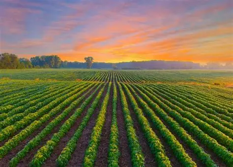
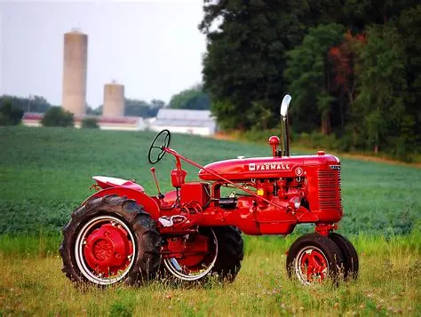

Treaty 1 Terms
Reserve land was given

The government gave First Nations smaller areas of land called reserves where they could live. These reserves were much smaller than the land they originally used before the treaty. The amount of land was about 160 acres for every family of five people. These areas were supposed to support their communities, but they were not enough.
Money payments

The government promised to give money to First Nations people every year as part of the treaty. Each person would receive $3 per year, at the time, and chiefs and leaders were given a bit more money than others.
Farming support

The government said they would help First Nations learn how to farm. They promised to give tools, seeds, and animals to help and this was supposed to help them grow their own food and survive, but this agreement wasnt always promised.